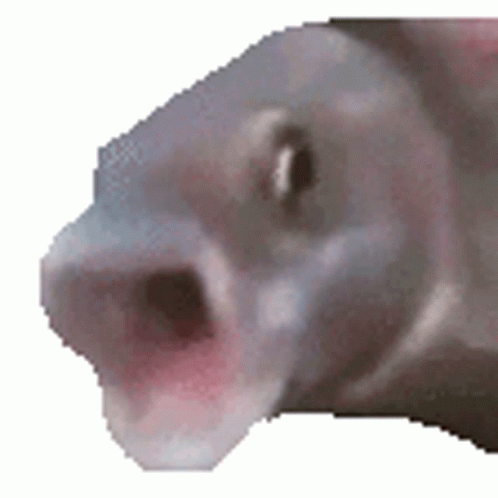

JavaScript powstał 4 grudnia 1995 roku
JavaScript jest wykonywany przez silnik JavaScriptu w przekgladarce
JavaScript jako jeden z niewielu języków programowania jest zorientowany obiektowo. ...
W praktyce, jeśli zastosujemy na stringu funkcję taką jak length czy charAt ,
to język niejawnie tworzy z niego obiekt, a potem wywołuje daną funkcję
